ปล.วันฮาโลวีนวันที่ 31ตุลา แต่กิจกรรมหมดก่อน วันฮาโลวีน อันนี้ยังคงเป็นหนึ่งในปริศนาทั้งเจ็ดของ ECO
ปล.2 ซับนรก กรุณาทำใจก่อนรับชม
รายละเอียดเควสคร่าวๆ
http://econline.gungho.jp/news/event/event/event_of_20120920.html
Now Loading......
1:見習い魔女のカボチャスープ
1 ซุปฟักทองของแม่มดฝึกหัด
1.1 เริ่มเควสที่แม่มดฝึกหัดดาวทาวทิศใต้ หน้าร้านขายอาวุธ (ท่ายืนผู้ชายชัดๆ...)
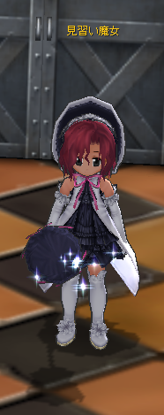

คุยกับเธอ เธอจะใช้เราเอาซุปฟักทองไปแจก(หลอกขาย)ให้คนในดาวทาว โดยเธอจะให้เรามาเจ็ด ต้องเอาไปปล่อยให้หมด(แต่ห้ามทิ้งนะ)

หน้าตาของไอเทมเจ้าปัญหา
1.2 เหยื่อ..เอ๊ย ลูกค้า.. กลุ่มแรก ครอบครัวคุณป้า ทางทิศตะวันตกเฉียงใต้ของดาวทาว

บ้านคุณป้าอยู่กันสี่คน เลยสอยซุปเราไปซะสี่หม้อ งานนี้ท่าทางจะง่าย ออกไปเกินครึ่งละ

1.3 ท่านที่สอง ไทนี่กรูเมต์ (นามสมมติ) ยืนอยู่กลางดาวทาว เยื้องไปทางทิศเหนือ

เนื่องจากพี่แกมีฟักทองเต็มรถเข็นแล้ว เลยขอจากเราแค่อันเดียวก็พอ กินฟักทองเยอะไม่ดีต่อสุขภาพ???

1.4 รายต่อไป คุณลุงฟักทอง ที่ดาวทาวตะวันตกเฉียงเหนือ เยื้องมากลางๆ
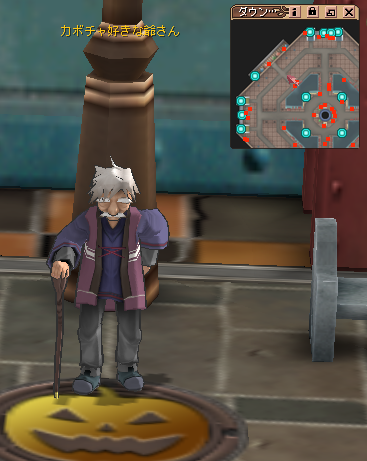
คุณลุงแกบอก แกกินไม่ได้หรอก แก่แล้ว แกจะเอาไปจีบสาว(ทำไปได้....) ขออันเดียวละกัน ลุงรักเดียวใจเดียว(ไม่ค่อยจะ...เลยนะลุง)
1.5 อันสุดท้าย เข้าไปในผับดาวทาว ที่อยู่ทางทิศตะวันออกของดาวทาว จะมีคุณป้าฟักทองยืนอยู่ในผับ
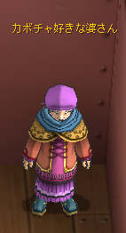
ป้าแกบอก แกอยากกินซุปฟักทองมากกกก แต่หาไม่ได้ซักที เลยฝากคนที่มาจีบให้ไปหามาให้หน่อย (คุ้นๆ)
แต่ในเมื่อเราเอามาให้แล้ว ป้าแกก็ว่าดีละ เอาของเราด้วย กินของลุงนั่นด้วย สองต่อ กำไรเห็นๆ

1.6 เดินกลับไปหาแม่มดฝึกหัดเจ้าเก่า เจ๊จะให้ซุปเราอีกหม้อ แต่กินไม่ได้ เป็นของจำลอง ไว้แต่งบ้าน


1.7 ต่อเนื่อง เนื่องจากแม่มดฝึกหัดแจกซุปไปหมดแล้ว ลืมเก็บสำรองไว้ เย็นนี้เลยไม่มีข้าวกิน ให้เราไปช่วยหาอาหารมาให้หน่อย
เจ๊ต้องการ ゼリコ Seriko เซริโกะ
 20 ชิ้น หาได้จากปุรุรุ
20 ชิ้น หาได้จากปุรุรุและ ルーン草 Rune Grass หญ้ารูน 15 ต้น หาได้จากต้นหญ้าและหมูป่า (เจ๊กินแปลกแฮะ)
1.8 นำของมาให้เจ๊ แล้วเจ๊จะเอาชุดเก่ามาแลกไข่...เอ๊ย เอามาแลกกับเซริโกะและหญ้ารูน ชุดจะเป็นชุดแบบเดียวกับที่เจ๊ใส่เป๊ะ เนื่องจากเจ๊ต้องการหาสมาชิกแก๊งแม่มดน้อย
รายชื่อไอเทมที่ได้
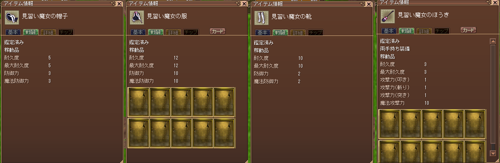
見習い魔女の服
見習い魔女の帽子
見習い魔女の靴
見習い魔女のほうき
ภาพตัวอย่างชุด


ชายนิรนามที่กำลังโดนเหล่าแม่มดน้อยรุม

。
。
。
。
เป็นอันเสร็จสิ้นภารกิจแม่มดฝึกหัด
ปล.ตอบข้อแรก เป็นการมอบซุปให้
ปล2.จะส่งให้ใครก่อนก็ได้ ไม่ต้องเรียง
ปล3.เอาง่ายๆคือ เควสนี้ตอบข้อแรกยาวไปเลย ไม่ต้องคิดมาก
ปล4.ย้ำว่าซับนรก เพื่อความครื้นเครง
ปล5.ชุดสำหรับผู้หญิง ไม่แนะนำให้ผู้ชายทำเอาชุดมาใส่ มันทุเรศมาก
______________________________________________________________________
2:魔法のほうき
2:ไม่กวาดเวทย์มนต์
2.1 คุณกับเด็กหนุ่มจากสหพันธ์เวทย์มนต์ ที่ยืนอยู่กลางอัพทาว
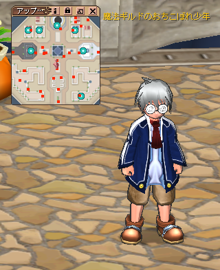
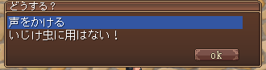
ตรงนี้เลือก 1 หรือ 2 ก็ได้ตามใจชอบ ให้ผลเหมือนกัน

2.2 เราจะถูกวาร์ปไปยังห้องๆหนึ่ง... ให้เราคุยกับเด็กหนุ่ม แล้วเราจะรีบหนีออกมาจากห้อง
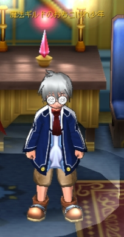
2.3 เราจะหนี(ถูกส่ง)ไปยังห้องราชินี คุยกับองค์ราชินี (เดินเข้าไปใกล้ๆ คือการคุย) เธอจะบอกให้เราช่วยเด็กหนุ่มหาไอเทมในตำนาน ที่หลับไหลอยู่ในเมืองแห่งนี้หน่อย (เลือกข้อ 1 เป็นการตกลงช่วย)

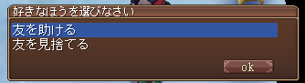
2.4 เริ่มไล่ตามตำนานได้ที่ ชายหนุ่มชุดดำ ในห้องรีสกิลของเมืองเหนือ


เขาบอกว่า ให้ลองไปถามหมอดูประจำเมืองดู เธอรู้ทุกอย่างในเมืองแห่งนี้
2.5 ออกเดินทางไปหาหมอดู
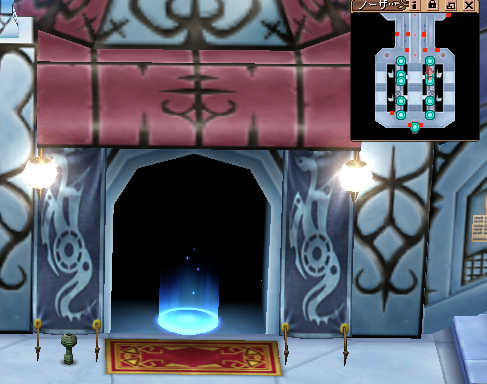

เธอบอกว่าช้านนนไม่รู้ววววว ลองไปถามไอ้เด็กชอบสอดนั่นดูเอา เด็กนั่นชอบสอดรู้สอดเห็นไปหมดแหละ
2.6 เราก็ต้องทำใจ เดินไปหาเด็กนั่น...เด็กผู้ชาย(ดาร์ลิงค์)ที่ยืนแถวๆสะพาน

เด็กนั่นบอกไม่ว่าง (จีบสาวอยุ่ ..เจริญ) บอกปัดให้ไปขอที่ห้องทหารเมืองเหนือ
ซึ่งต้องไปเอาที่ห้องเพศตรงข้ามเรา ปกติจะเข้าไม่ได้ แต่มีวิธี ต้องไปลองถามเจ้าของบาร์ดู
2.7 ไปที่บาร์ที่อยู่ใกล้ทางออกเมือง คุยกับเจ้าของบาร์


เจ้าของบาร์บอกว่า ให้เราเอาของขวัญไป จะเข้าห้องของเพศตรงข้ามได้ พี่แกก็ใจดี จัดของมาให้เราเลยทันที
ชายจะได้รับดอกไม้ เอาไปให้สาวๆ หญิงจะได้รับแซนวิช ไปป้อนหนุ่ม


2.8 แล้วให้เรานำของขวัญไปมอบให้ โดยที่ชายจะต้องเข้าไปที่ห้องทหารหญิง หญิงจะต้องนำไปให้ที่ห้องทหารชาย
ภาพยนตร์เรื่องนี้ เป็นรายการที่ไม่เหมาะสมกับผู้ชมทุกวัย ผู้ชมที่มีอายุน้อยกว่า 18 ปีควรได้รับคำแนะนำ


ห้องทหารชายและทหารชายที่ผู้หญิงต้องนำของมาให้
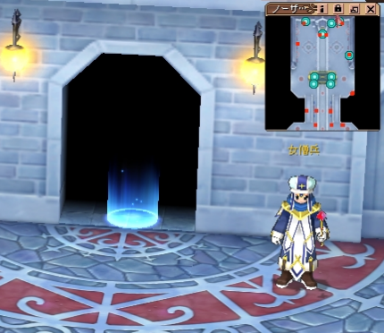

ห้องทหารหญิงและทหารหญิงที่ผู้ชายต้องนำของมาให้
เมื่อมอบให้แล้ว เราจะได้รับไอเทมในตำนานมาทันที มันคือะไรงั้นเหรอ....ปล่อยให้เป็นตำนานต่อไป

2.9 ออกเดินทางสู่ห้องจอมเวทย์ผู้ยิ่งใหญ่

เดินเข้าวาร์ปในห้องเลย ถึงจะไม่ใช่นักเวทย์ก็เข้าได้ (แลกกับการเสียไอเทมในตำนาน สายเวทย์ก็เสียนะเออ)
เข้าไปแล้วคุยกับลูกพี่ใหญ่ กลางห้องเลย (ไม่ต้องถอดเสื้อผ้านะ...ตลกละ)
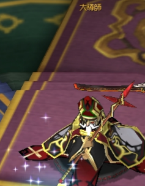
2.9 เราจะโดนถีบกลับมาที่ห้องกับเด็กหนุ่มอีกครั้ง ให้เราคุยกับเขาซะ

เขาบอกว่า คุณผ่านการทดสอบของเราแล้ว คุณได้เข้าไปเรียนที่ฮอก... เอ๊ย คุณได้รับอนุญาติให้เข้าไปที่โรงเรียนเวทย์มนต์ได้แล้ว กลับไปเตรียมตัวกันเถอะ
2.10 กลับมาอัพทาวอีกครั้ง คุยกับเด็กหนุ่มเพื่อรับไม้กวาดเวทย์มนต์

EX ขี่ไม้กวาด คุยเด็กหนุ่มแล้วเลือกข้อสองเป็นการเข้าสู่โรงเรียนเวทย์มนต์